In pictures

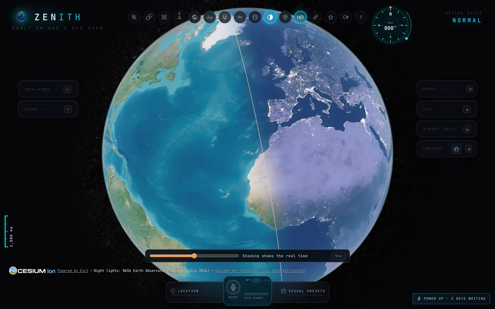

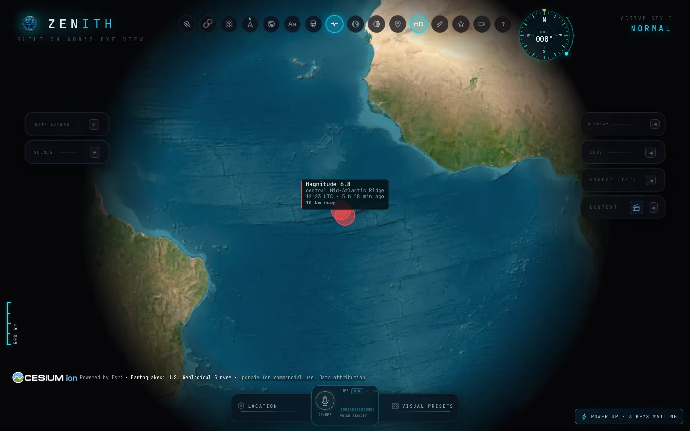

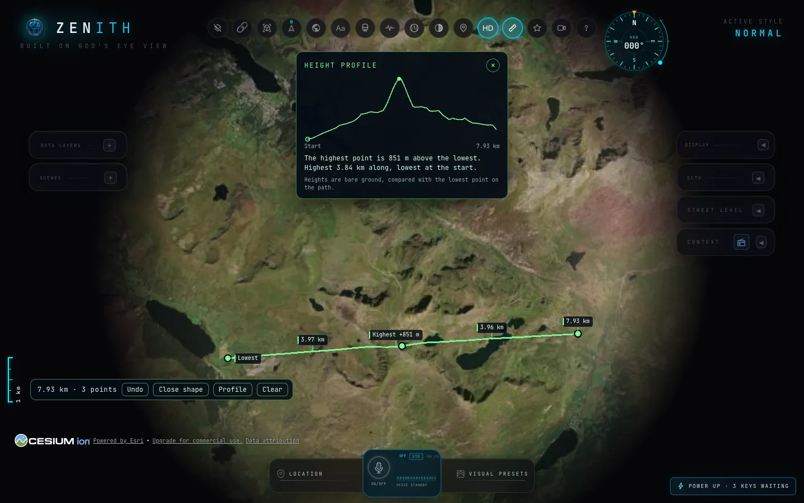

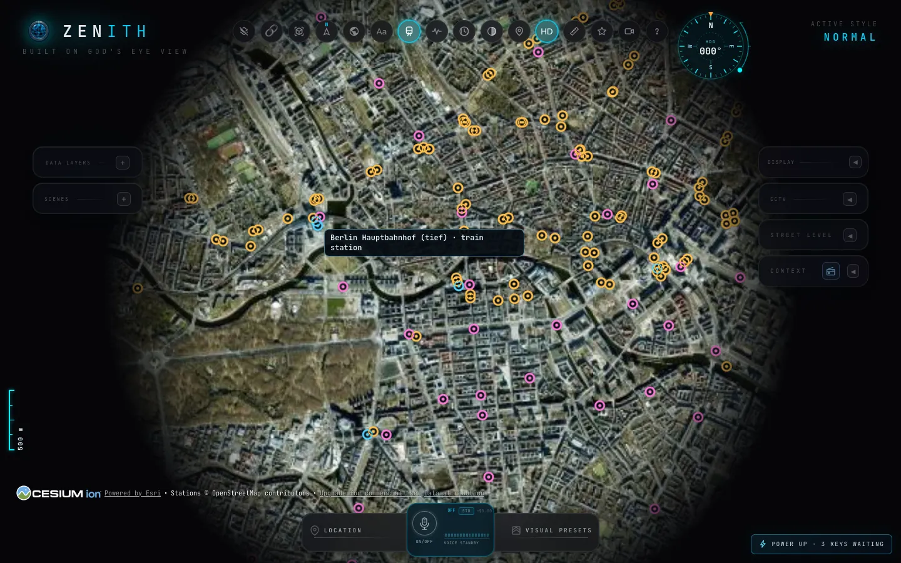

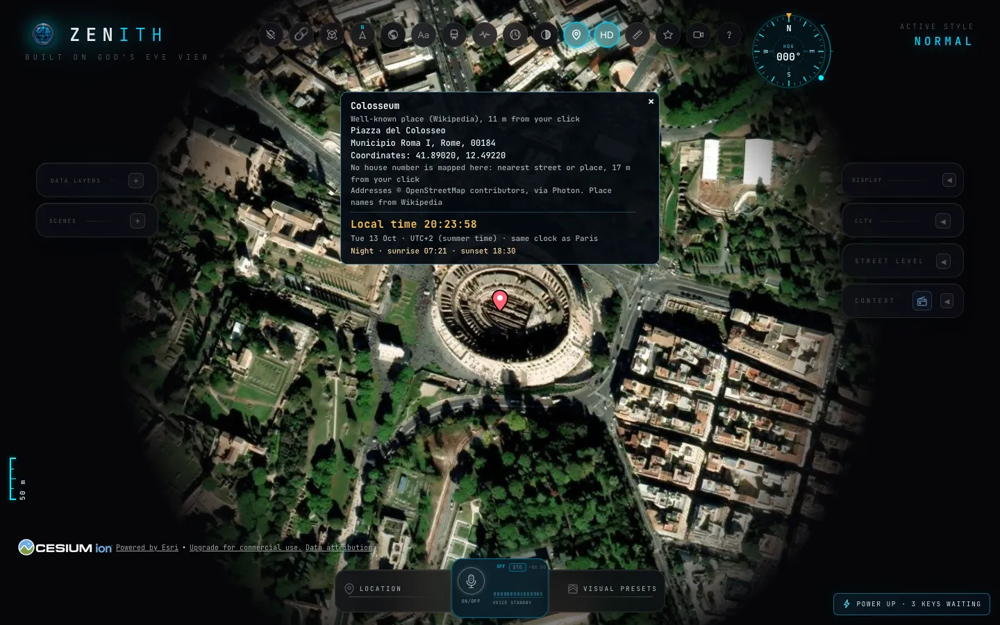

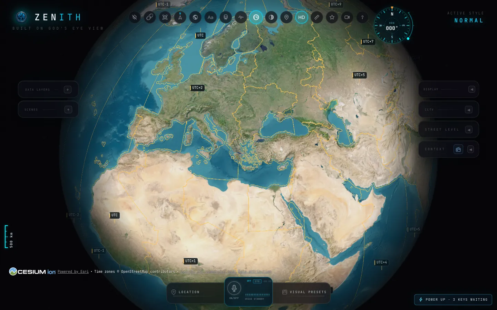
Pictures taken in Zenith on its satellite map. Map image is the intellectual property of Esri and is used herein under license. Copyright © 2026 Esri and its licensors. All rights reserved. Imagery sources: Esri, Maxar, Earthstar Geographics, and the GIS User Community. Drawn with Cesium. Night lights: NASA Earth Observatory. Earthquakes: U.S. Geological Survey. Stations, time zones and addresses: © OpenStreetMap contributors. Place names: Wikipedia.
What it shows
Aircraft
Thousands of live flights, with their routes.
Ships
Live vessels around the world.
Satellites
Hundreds of satellites and their orbits.
Public cameras
Traffic cameras that governments publish, including London.
Train stations
Train, metro and tram stops across seven countries and eleven big US city areas.
Addresses
Click anywhere for the address, the coordinates and the local time.
What this build adds
Compass and scale
Turn and tilt the view from one dial, with a distance ruler on the edge.
Time zones
Zone borders, and a ticking local time for any spot you click.
Tracking marker
Keeps the aircraft you follow in sight, however far you zoom out.
HD buildings
A switch for sharper 3D buildings.
Measure
Click spots on the map to get the distance between them.
Day and night
The night side of the Earth, shaded, with city lights.
Saved places
Star a view, name it, and fly back with one click.
Video mode
Hides the controls and circles a spot, for recording.
What's new in version __VERSION__
-
__WHATS_NEW__
Get it running
If you are under 18, ask a parent or guardian before installing. Zenith runs programs on your Mac.
- Install Node.js. Version 24 or 26, from nodejs.org.
- Unzip the download. You get a folder called
Zenith. - Double-click
Start Zenith.command. It lists what it is about to do and waits for you. Then it installs what Zenith needs, starts it and opens it in your browser.
macOS asks you to allow the file the first time: System Settings, Privacy & Security, Open Anyway. To type the commands yourself instead, follow ZENITH-GUIDE.md inside the zip.
Good to know
- It is distributed outside the App Store. macOS may ask whether you trust it. That is expected for software downloaded from a website.
- You need your own free keys for some layers, such as 3D buildings and live ships. The app tells you where to get them. Some key services have age rules, so a parent may need to own the account.
- Other services see your internet address and roughly where you look on the map: the map, camera and font providers. Zenith itself has no accounts and sends nothing to its author or to whoever shared this link with you.
- This page uses no cookies, no trackers and no sign-up.
Zenith MC: a spy map for Minecraft
NOT AN OFFICIAL MINECRAFT PRODUCT. NOT APPROVED BY OR ASSOCIATED WITH MOJANG OR MICROSOFT.
A separate download for Minecraft Java Edition 26.2: a Fabric mod that brings the Zenith look to your Minecraft world. It is not part of the Zenith zip.
Minimap and world map
A round minimap with a compass dial and a scale bar, and a full map with soft relief that you drag and zoom. Explored land is remembered, and caves show the layer you are on.
Waypoints
Name and colour your places, see them in the world with their distance, and find where you last died.
Radar
Mobs as coloured dots that merge into one when crowded, other players as their face, and a search that points you to a player.
Player cards
On the world map, each player gets a card with their face, name, hearts and armour. Click it for the spy panel: what they wear and hold, their game mode and ping.
Eye modes
Night vision, full bright, spy with target boxes and a sonar sweep, X-ray, FLIR heat vision and an old CRT screen. Each has its own key.
Teleport in creative
Click a spot on the map to go there, landing on the highest safe block. Only in creative mode.

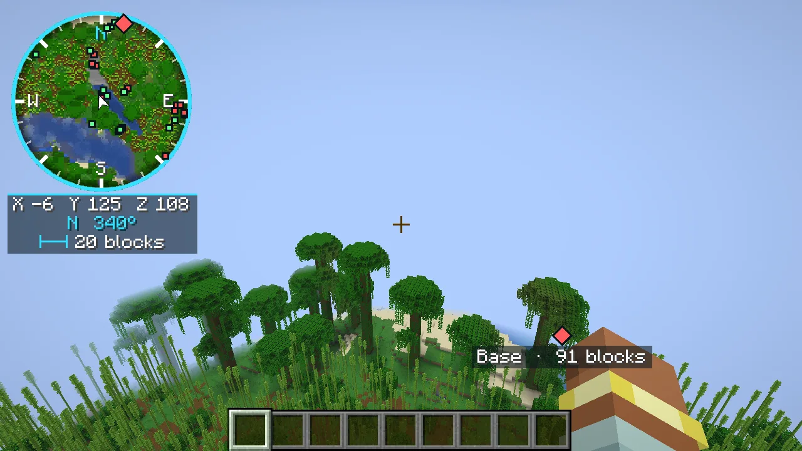

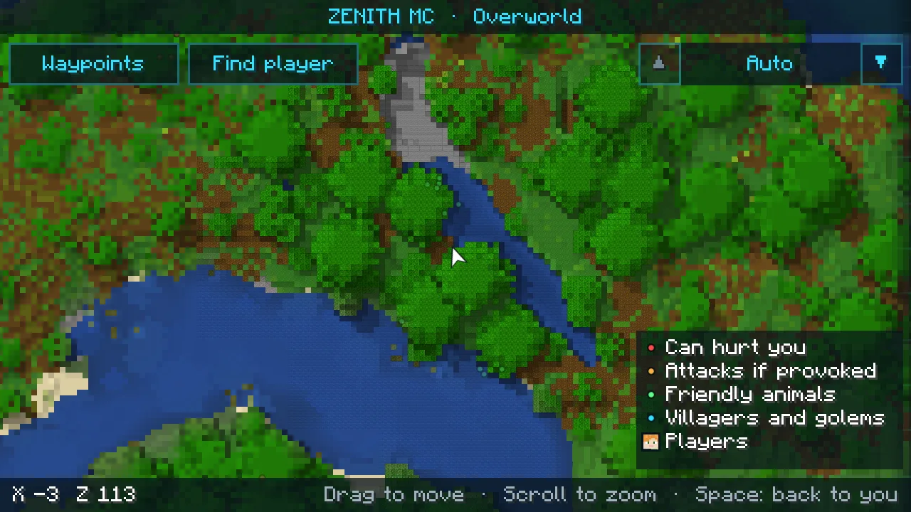

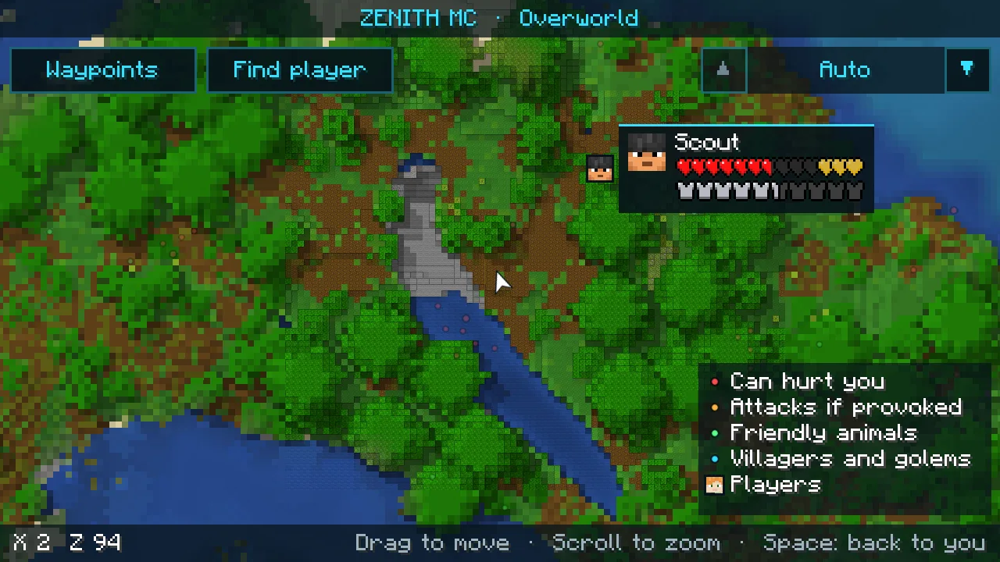

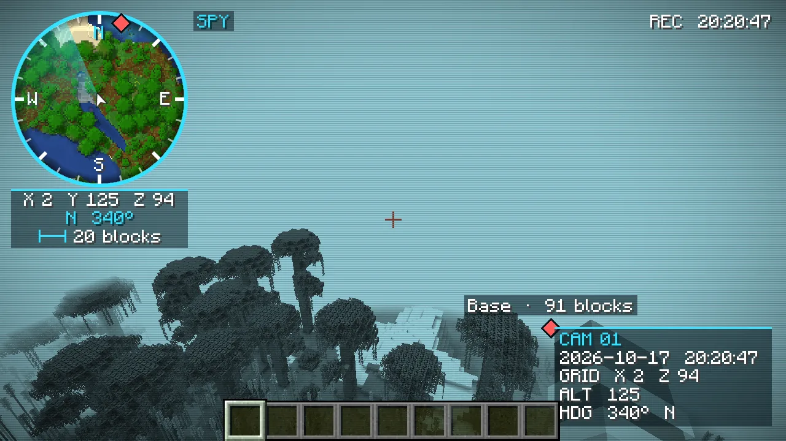

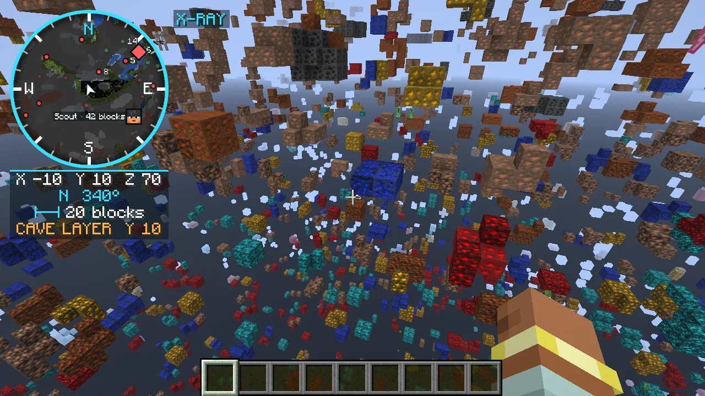

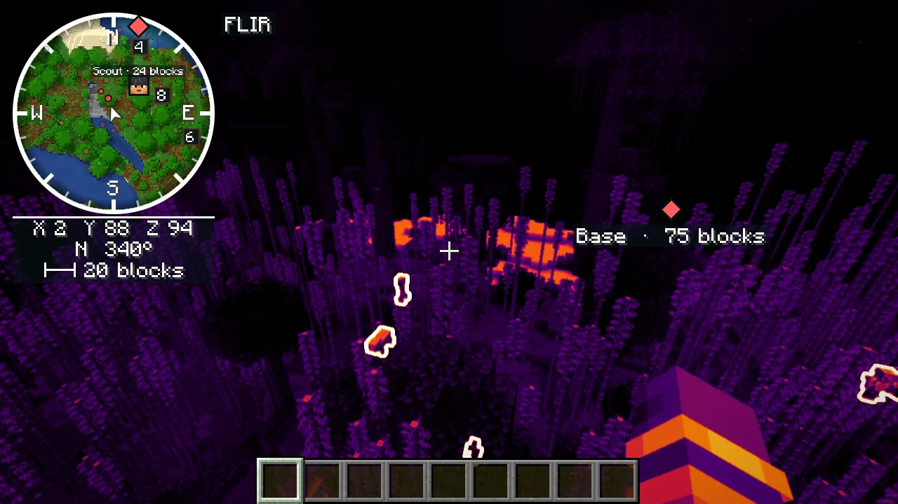
Pictures taken in Minecraft with Zenith MC.
Read this before you use it online. X-ray, the player radar, player health and armour cards, target boxes and FLIR outlines through walls break the rules of many servers, and using them there can get you banned. Many servers also hide their ores from mods like this: there, X-ray shows fake ores that are not really there. Use these in your own worlds, or on servers that say they are allowed. Servers can switch the radar off, which also hides the cards, target boxes and FLIR outlines; X-ray has no switch.
Install it
If you are under 18, ask a parent or guardian before installing mods.
- Install Fabric Loader for Minecraft 26.2. Download the installer from fabricmc.net, run it, choose Minecraft 26.2 and press Install. The Minecraft launcher then has a
fabric-loaderprofile. - Download Fabric API for 26.2 from Modrinth. Pick a file marked for 26.2.
- Put both files in your mods folder. The Fabric API file and the Zenith MC file go in the
modsfolder of your Minecraft folder: on a Mac~/Library/Application Support/minecraft/mods, on Windows%appdata%\.minecraft\mods. Make themodsfolder if it is not there. - Start Minecraft with the Fabric profile. Then press
Mfor the world map,Bto add a waypoint andNfor the settings.Gcycles the eye modes, or press one key for each:Vnight vision,Jfull bright,Kspy,RX-ray,;FLIR,HCRT. Every key can be changed in Controls.
- Minecraft 26.2 only, for now. Other versions come later.
- Only you need it. It runs in your game; servers do not need anything installed.
- Works with Sodium and Iris. Tested with Sodium 0.9.2 and Iris 1.11.4, and with the Complementary Reimagined shader pack on. Iris also uses
KandR, and Xaero's maps useMandB: if two mods share a key, change one of them in Controls.
Credit
Zenith is built on God's Eye View by Bilawal Sidhu, an open-source project under the MIT licence. Zenith is an independent build with additional features. It is not the original project and is not affiliated with its author.
Map data © OpenStreetMap contributors. Every source and licence is listed in ALON-NOTICES.md, THIRD_PARTY_NOTICES.md and DATA_SOURCES.md inside the zip.